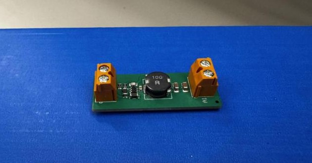
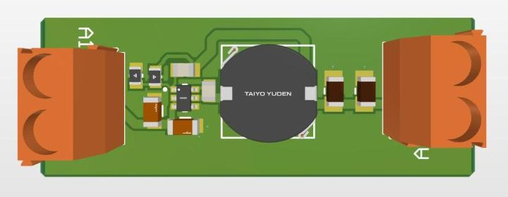
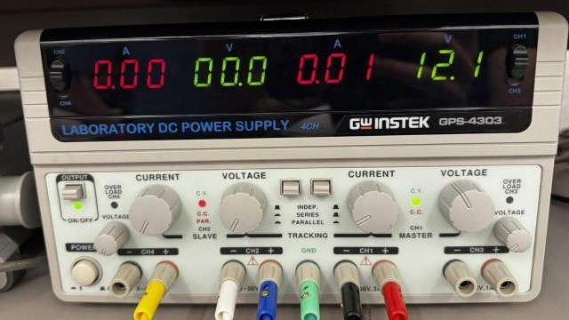
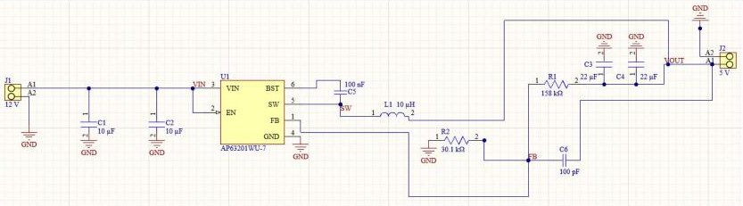
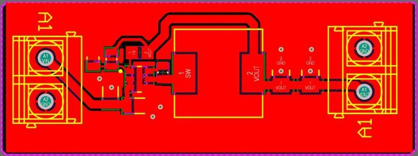
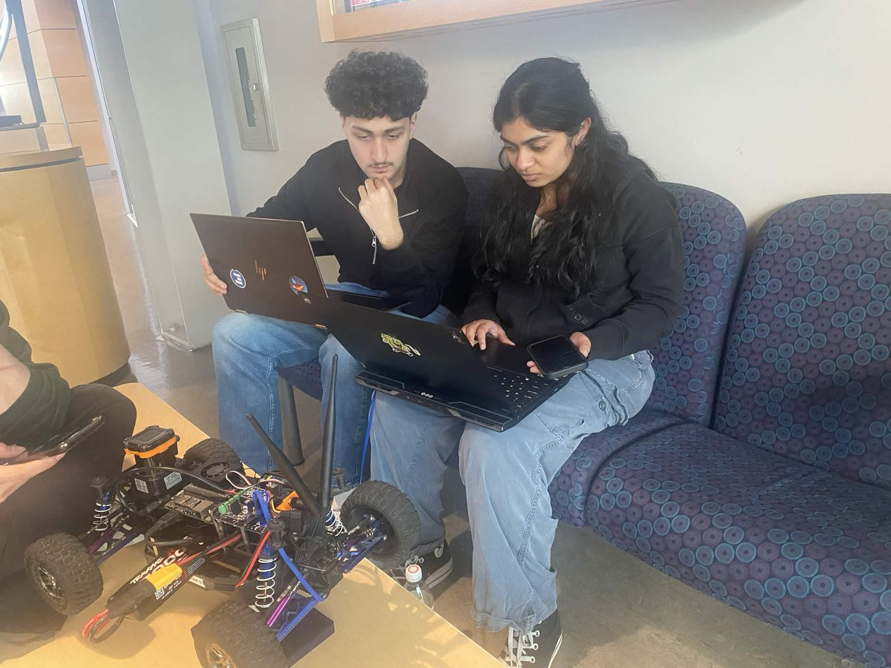
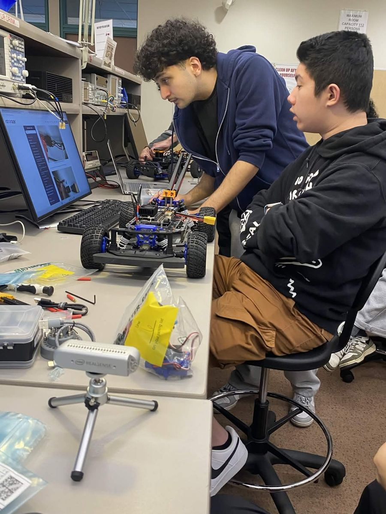
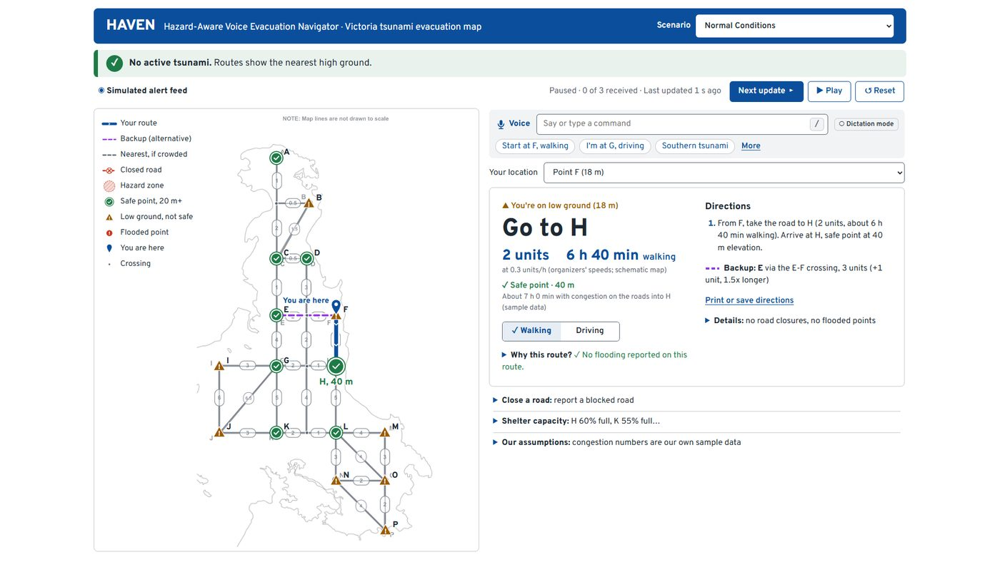
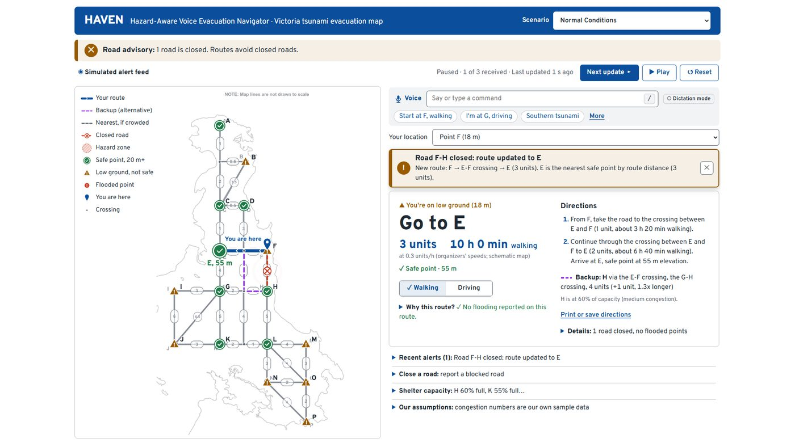

12 V-to-5 V, 2 A buck converter PCB: fabricated and tested
A synchronous buck converter around the Diodes AP63201, taken from calculations to a fabricated board on my bench. I wanted something harder than a fixed-output regulator, so I set the design targets and sized the parts myself.
What I did
- Calculated the feedback divider (158 kΩ / 30.1 kΩ) and sized a 10 µH inductor for 0.58 A ripple at 500 kHz.
- Drew the schematic and 2-layer PCB in Altium Designer, with the input capacitor at the IC, a short switch node, and a ground plane with stitching vias. Ran DRC and built the BOM.
- Had the boards fabricated and assembled by JLCPCB, then hand-soldered the inductor (hot air and solder paste) and the screw terminals on two boards.
- During bring-up, the output read about 10.9 V. I traced it to terminal solder joints that weren't secure, using continuity and resistance checks with a DMM, reworked them and corrected the bench-supply current-limit setup.
- No-load testing: both boards regulate at about 5.02 V and stay within about 2 mV across 8.2–12.1 V input, measured on a 5½-digit Agilent 34405A DMM.
Next
Load tests at 0.5, 1 and 2 A (input and output voltage and current, for efficiency), output ripple at 2 A on the scope, and IC temperature rise, each compared against my calculations.





SFU RacerBots: F1TENTH autonomous race car
I joined RacerBots when the club was just starting and had no car. We built a 1/10-scale autonomous car (NVIDIA Jetson, LiDAR, VESC motor controller, ROS 2) as a team. The club now runs two cars, and in November 2026 RacerBots won its first F1TENTH race at UVic.
Hardware I built and wired
- Soldered the car's power board and wired the 3S battery into it; the board feeds the Jetson, LiDAR and VESC.
- Did the Jetson integration and power wiring, and checked power rails and signals with an oscilloscope and DMM during bring-up.
- Mounted and wired the LiDAR, wired the steering servo and BLDC motor to the VESC, and 3D-printed mounts for the car.
Calibration and tuning
- Took on odometry calibration when SLAM was failing to close loops. I first cleared three bring-up faults (Linux input-group access, a controller mode swap, and VESC servo output disabled). Then I found a parameter-reading and signed-gain bug in the calibration wizard and directed an AI-written fix.
- Three forward trials showed 2.63% odometry error before adjustment (4.155 m measured vs 4.267 m actual). I corrected the odometry gain, and SLAM loops then closed.
- Retuned steering so full lock matched on both sides at 25° (it had been 19.5° left vs 12.3° right). I also specified fixes to the team's steering wizard: sample filtering, blocking invalid values, and config backups.
- Fixed a launch stutter by adjusting the VESC open-loop ERPM; a re-test showed the stutter was gone.
- Wrote the team's VESC Tool user and sensorless startup tuning guide, so new members can tune the car without senior help.


HAVEN: Hazard-Aware Voice Evacuation Navigator
A one-day build with my partner Victor Duong at our first programming competition. The problem was revealed on the day: tell someone in a Victoria and Oak Bay tsunami scenario exactly where to go and how to get there. You tap or say where you are, and HAVEN routes you to the nearest safe point (at least 20 m high and outside the flood zone), with travel time, directions and a backup route.
How it works
- Routing uses Dijkstra's algorithm with a "super-sink," so one search finds the nearest of all safe points. It prefers routes that avoid the flood zone, even if they're longer.
- The backup route closes each road of the main route in turn and re-runs the search.
- It re-plans live when a road closes, a shelter fills up or the flood zone spreads, with colour-coded alerts.
- Voice control runs through VoiceOS over MCP: an AI agent calls 12 tools that use the same planning function as the screen.
- It keeps working offline through a service worker, because networks fail first in a disaster.
How we built it
- I did most of the build, running several Claude Code agents in parallel on separate parts, with written specs and automated tests as the check.
- 783 automated tests check every start point against reference answers worked out by hand before any code was written.
- Victor helped with the VoiceOS test cases and the presentation slides.
Code and README: github.com/AdeebTarzi/Haven


Sentia Technologies: sensor testing
Sentia makes printed humidity and temperature sensors with interdigitated electrodes and tests them in a humidity chamber against a reference sensor. A known problem is trial-to-trial repeatability, since humidity can't be set the same way each trial. My first projects target that test setup.
So far
- Wrote a one-page literature review on humidity and temperature sensing: relative humidity, temperature dependence, response and recovery, hysteresis, drift, and what a test chamber needs.
- Designed a new humidity-chamber bottom in SolidWorks (with help from Claude Code) and 3D-printed it myself.
- Proposed a four-channel sensor switching prototype (ESP32 + CD4052BE analog multiplexer), so one Keysight U1733C LCR meter can measure four sensor nodes. I presented it to my supervisor and the engineering team; it is at the proposal stage and not built yet.
- Prepare sensor samples for humidity-chamber testing.
Tools and skills
Design
Altium Designer (schematic, 2-layer PCB, DRC, BOM), LTspice, SolidWorks
Bench and build
Oscilloscope, 5½-digit DMM, bench power supply, semiconductor parameter analyzer, SMD and hot-air soldering, 3D printing
Software
C/C++, VHDL, MATLAB, Bash, Linux, ROS 2, Docker, Git, Claude Code